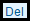
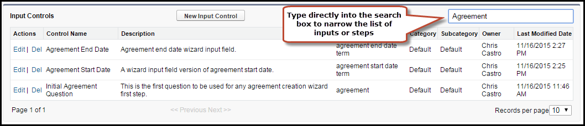

Using the Wizard Component Library
Wizard Component Library is a repository consisting of Input Controls and Steps. The Configurable Wizard offers a tab from which you can manage libraries of both Steps and Inputs. When you create a step or input from a Wizard Design, that step or input is available to that specific wizard design only. In many cases, you will want to create steps or inputs which can be used by more than one Wizard. Use the Wizard Component Library to create reusable steps and inputs.
The Wizard Component Library is comprised of two tables: Steps and Input Controls.
- Input Controls - Input Controls are individual questions. You can create the question and relevant options using Input Controls. These questions will be displayed in a survey. The input controls are reusable.
- Steps - Steps are the multiple questions that you can club together to form a survey. You can set the Input Rules as well. You can select all the input controls from the Input Library. Steps are different pages in the Wizard that display sets of Input Controls (or questions).
The input controls and steps that you create using Wizard Component Library can be re-used in as many surveys as you want.

Information displayed in table columns comes directly from Input or Step Setting details.
You can take the following actions on tables in the Wizard Component Library:
|
Action |
Description |
|
|
Click New Step to create a new step in the Steps Library. See Creating Steps for more information. |
|
|
Click New Input Control to create a new input in the Inputs Library. See Creating Inputs for more information. |
|
|
Edit an existing step or input. Edited steps and inputs will only apply to newly-created Wizard Designs and do not affect steps or inputs for existing Wizard Designs. |
|
 |
Delete an existing step or input. Deleted steps and inputs will only apply to newly-created Wizard Designs and do not affect steps or inputs for existing Wizard Designs. |
|
|
Use the type-ahead feature to narrow the list of displayed
inputs or steps you want to edit, delete or view.
 |